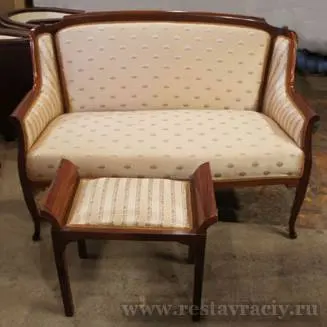
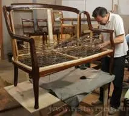
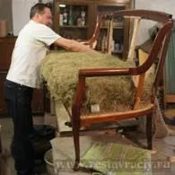
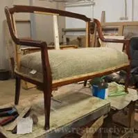
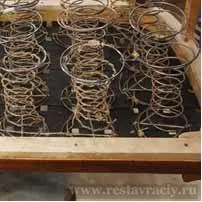
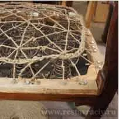
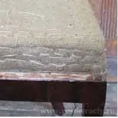
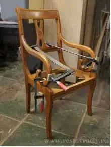
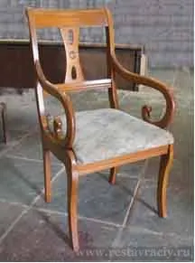
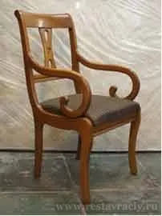

Услуги
Реставрация мягкой мебели
Реставрация мягкой мебели старинной, антикварной.


Данные мастерской
| Название | Стул жёский | Кресло мягкое | Диван мягкий |
|---|---|---|---|
| Склейка | 3-5 тыс. р | 10 тыс рублей | 25-30 тыс рублей |
| Столярная работа и отделка | 10-15 тыс рублей | 15-20 тыс. р | 40-60 тыс. р |
| Перетяжка | 3-5 тыс. р | 20-25 тыс. р | 50- 80 тыс. р |
| Элементы Основание | Несущие функц. конструкции. | Толщина настила мм |
|---|---|---|
| Мягкие Упругое | Каркас, пружины сжатия. | 30-50 |
| Мягкие Гибкое | Пружины сжатия, настил. | 30-50 |
| Мягкие Жесткое | Конский волос, морская трава, холлкон. | 80-100 |
| Мягкие Эластичное | Конский волос, морская трава, холлкон. | 50-60 |
| Полумягкие Упругое | Настил из упругого материала | 30-40 |
| Полумягкие Эластичное | Настил из упругого материала | 20-30 |
| Жесткие Жесткое | С настилом или без него. | До 10 мм |
Видеозаписи мастерской
О чём рассказывает мастерская
- Цена реставрации мягкой мебели
- Классификация видов мягких конструкций
В материале мастерской
Фотографии и детали



Открыть снимок у мастерской


Открыть снимок у мастерской


Открыть снимок у мастерской


Открыть снимок у мастерской


Открыть снимок у мастерской


Открыть снимок у мастерской


Открыть снимок у мастерской


Открыть снимок у мастерской


Открыть снимок у мастерской
Посмотреть снимки с сайта мастерской 5
Оригинальные фотографии откроются здесь с сайта мастерской.
 Открыть снимок у мастерской
Открыть снимок у мастерской  Открыть снимок у мастерской
Открыть снимок у мастерской  Открыть снимок у мастерской
Открыть снимок у мастерской  Открыть снимок у мастерской
Открыть снимок у мастерской  Открыть снимок у мастерской
Открыть снимок у мастерской Есть похожая вещь?
Подберите ракурсы для предварительной оценки.